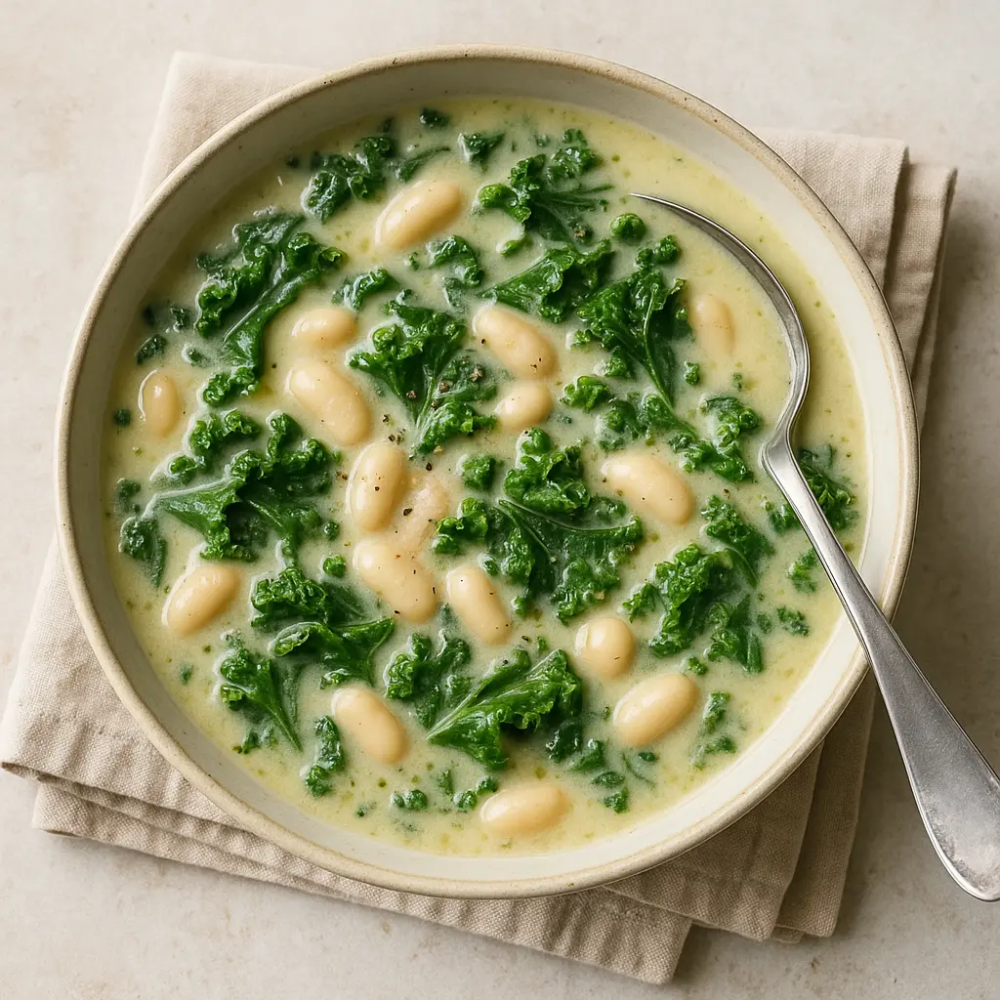
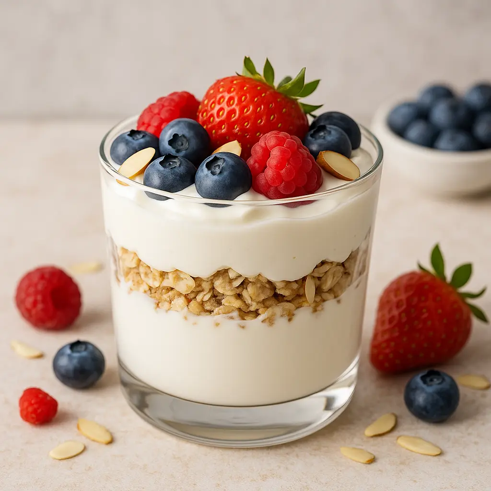

Why Calcium Matters for Bone Health
Calcium plays a crucial role in building and maintaining strong bones. As Americans age, getting enough calcium through diet becomes vital to prevent osteoporosis and reduce fracture risks. These recipes combine taste with nutrition, helping you meet your daily calcium needs effortlessly.
1. Creamy Kale and White Bean Soup
This hearty soup blends calcium-rich kale with protein-packed white beans for a comforting and bone-friendly meal.
Ingredients:
- 1 tbsp olive oil
- 1 onion, chopped
- 3 garlic cloves, minced
- 4 cups kale, chopped
- 2 cups cooked white beans (cannellini or navy beans)
- 4 cups low-sodium vegetable broth
- 1 cup unsweetened calcium-fortified almond milk
- Salt and pepper to taste
Instructions:
- Heat olive oil in a large pot over medium heat. Add onion and garlic, sauté until soft.
- Add kale and cook until wilted.
- Stir in beans and vegetable broth, simmer for 15 minutes.
- Add almond milk and blend partially with an immersion blender for creaminess.
- Season with salt and pepper. Serve warm.
2. Greek Yogurt Parfait with Almonds and Berries
A quick and tasty snack packed with calcium from Greek yogurt and almonds, perfect for any time of day.
Ingredients:
- 1 cup plain Greek yogurt
- 1/4 cup chopped almonds
- 1/2 cup mixed berries (blueberries, strawberries, raspberries)
- 1 tbsp honey or maple syrup (optional)
- 1 tbsp chia seeds (optional)
Instructions:
- Layer Greek yogurt, berries, and almonds in a glass or bowl.
- Drizzle with honey or maple syrup if desired.
- Sprinkle chia seeds on top for extra nutrition.
- Enjoy immediately.
3. Tofu and Broccoli Stir-Fry

This flavorful stir-fry combines calcium-rich tofu and broccoli for a nutritious, easy dinner.
Ingredients:
- 1 block firm tofu, pressed and cubed
- 2 cups broccoli florets
- 2 tbsp soy sauce
- 1 tbsp sesame oil
- 2 garlic cloves, minced
- 1 tsp grated ginger
- 1 tbsp sesame seeds (optional)
Instructions:
- Heat sesame oil in a pan over medium-high heat.
- Add garlic and ginger, sauté for 1 minute.
- Add tofu cubes, cook until golden on all sides.
- Add broccoli and soy sauce, stir-fry for 5-7 minutes until broccoli is tender-crisp.
- Sprinkle with sesame seeds before serving.
Recommended Supplements to Support Bone Health
Along with a calcium-rich diet, consider these trusted supplements available in the US:
- Garden of Life Vitamin Code Grow Bone System (Men) – Features plant calcium, magnesium, and vitamin D3. Great reviews on Amazon!
- Garden of Life Vitamin Code Grow Bone System (Women) – Features plant calcium, magnesium, and vitamin D3. Great reviews on Amazon!
- Nature’s Bounty Calcium 1200 mg Plus D3 – Affordable, widely available, and trusted.
Related Articles
FAQs About Calcium and Bone Health
How much calcium do adults need daily?
Most adults require 1,000-1,200 mg of calcium daily. Women over 50 and men over 70 should aim for the higher end.
Can diet alone provide enough calcium?
While a balanced diet can supply most of your calcium needs, some people may require supplements, especially if dietary intake is low.
Conclusion
Incorporating these high-calcium recipes into your diet can significantly improve your bone strength and overall health. Combined with a healthy lifestyle, they help you stay active and fracture-free in 2025 and beyond.